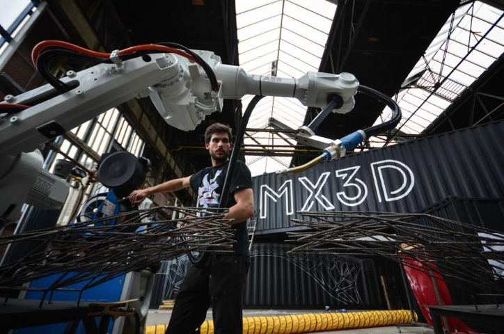
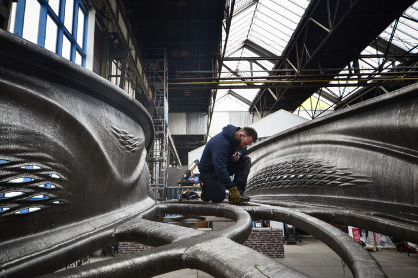

3D printed structural innovation speeds on as Dutch technology company MX3D unveiled the world’s largest 3D-printed bridge. This 40 foot long stainless steel pedestrian bridge is composed of 9,921 lbs of stainless steel and about 684 miles of wire and took six months to print. In printing of the bridge, MX3D used four of its MX3D-Metal robots.
The printed bridge is scheduled to be placed over a historic canal in Amsterdam and opened to the public in 2019.
The bridge is designed not only help pedestrians and cyclists to cross over the canal but to assist engineers in assessing the bridges health through sensors that will be fitted in the bridge for reporting data such as strain, displacement, and vibration, as well as environmental factors.
The bridge designer, Joris Laarman, said, “It’s a little bit like being in a science fiction story because it looks so different than everything else around. We work in a highly industrial shipyard where everything is geometric in shape, but this bridge doesn’t have a single straight line.” 3D printing allows the use of Generative Design, see Outside the Box Column 3, so that designers are not constrained by established geometric orthodoxy.
Currently, load testing to verify the structural integrity of the 3D-printed bridge has been positive. Testing will continue in 2018 on the bridge to ensure that it can withstand the full design loading it is expected to experience when it is finally opened to the public in 2019.
MX3D’s vision is to print 3D bridges and other Generative Design structures in place using teams of 3D printing robots. This innovative development looks like a paradigm changer to me.
What do you think?